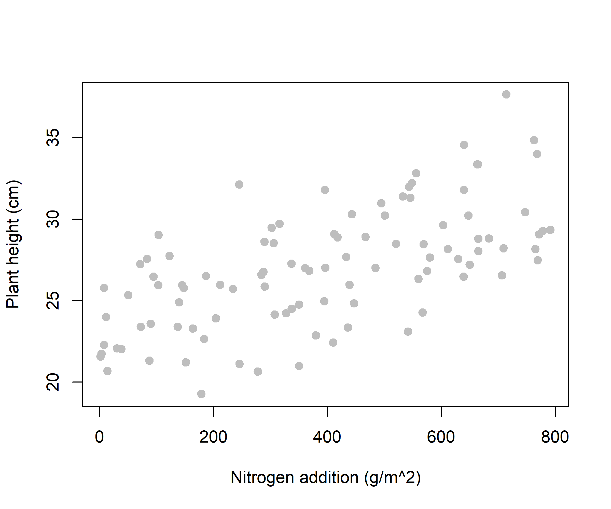
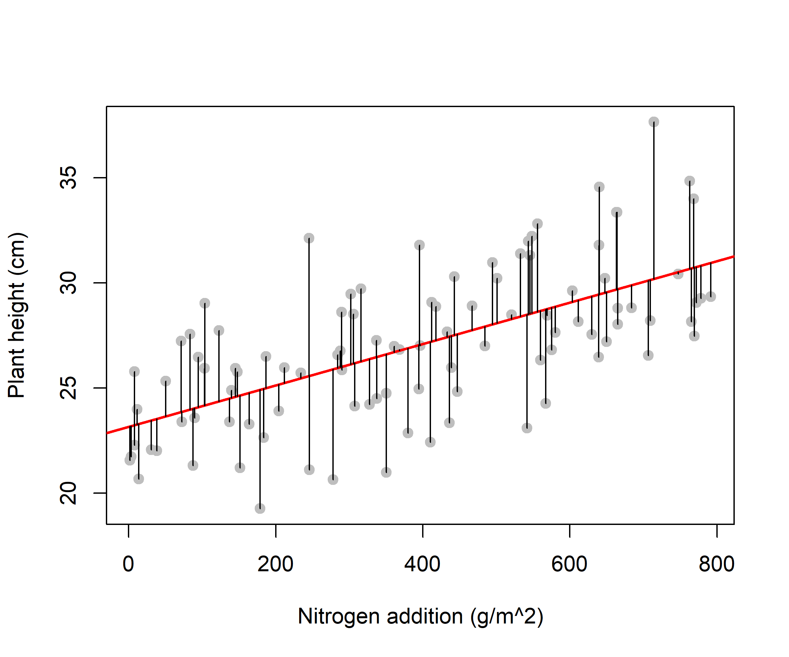
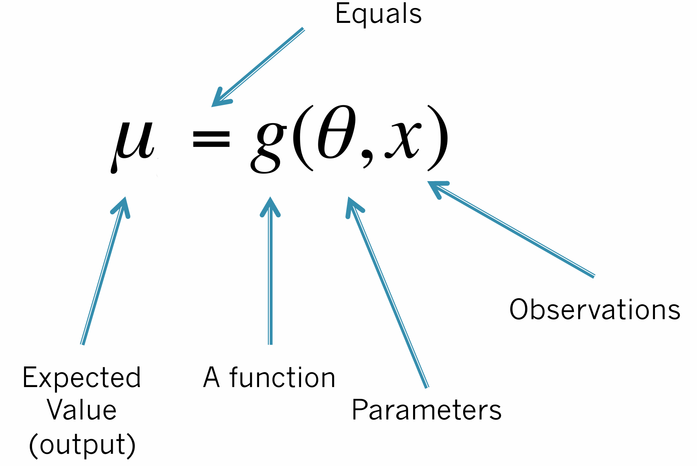
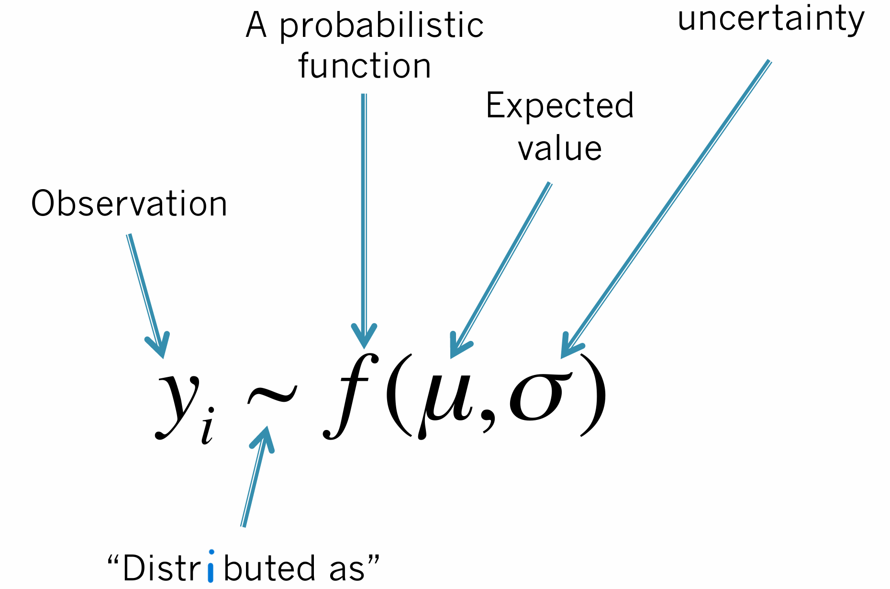
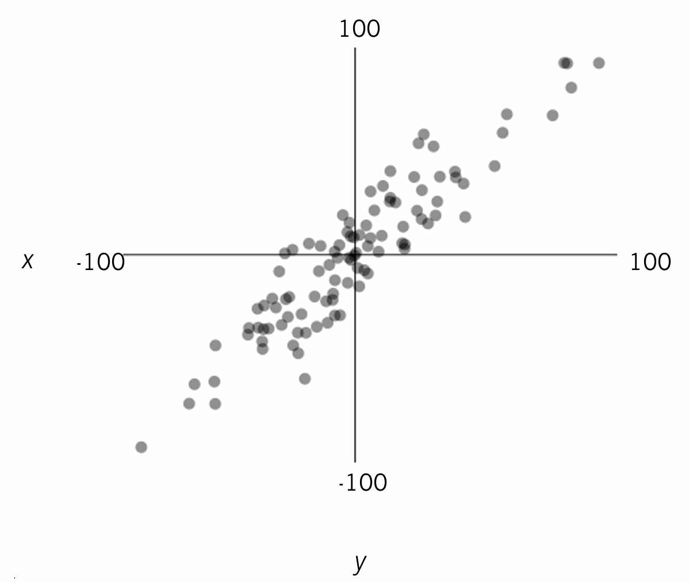
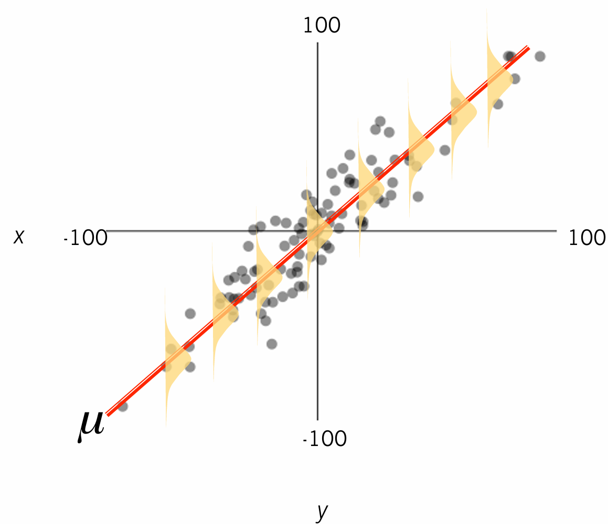

Lesson 6: Generalized Linear Models
2026-10-06
A linear model describes the relationship between a response and explanatory variable(s), assuming:
\[y = b_0 \times X_0 + b_1 \times X_1 + b_2 \times X_2 + \ldots\]

In a Gaussian linear model, the expected values are:
\[\mu = X \beta\]
and the errors follow a normal distribution:
\[y \sim {Normal}(\mu, \sigma)\]
Note
But are the errors always normal? What if our response is a count, a proportion, or presence/absence?

Statistical models describe:
Response = systematic + random
Note
other pairs of terms: deterministic + stochastic, or mean + dispersion structure of model
Deterministic process:

Stochastic process:

Why do we need both? Deterministic part is a mathematical model of a process while stochastic part is a statistical model of data that arise from the process.
Deterministic process: What biological process underlies the pattern in my data?
Stochastic process: What probabilistic process produces the values of my data?
\[y_i = \beta_0 + \beta_1 x_i + \epsilon_i, \qquad \epsilon_i \sim {Normal}(0, \sigma^2)\]
is exactly the same as:
\[\mu_i = \beta_0 + \beta_1 x_i, \qquad y_i \sim {Normal}(\mu_i, \sigma^2)\]
What if the errors aren’t normal?


The family for the errors can be: Gaussian for normally distributed data
Other example error distributions include:
A GLM uses a link function \(L\) to describe the relationship between the mean response and the predictor:
\[L(E(y)) = \beta_0 + \beta_1 x\]
\[E(y) = \beta_0 + \beta_1 x_1 + ... + \beta_n x_n\]
Let’s simulate observations as 1000 samples of body mass measurements of male peregrines.
As we did last week, we can analyse these data using canned software. There are R packages to fit linear models using frequentist inference methods (e.g., lm() or glm() from stats package), or Bayesian inference (e.g., brms package).
We could also use general-purpose software to fit models. In this lesson, you will see how to fit linear models using R package ”nimble”. When we use R packages, we need to learn the syntax and provide the required input and format. First, make sure the required packages are installed and loaded into R. Second, bundle data in a list. Third, write the Nimble model in BUGS language.
We use Markov Chain Monte Carlo simulations to draw samples from the posterior distribution of our parameters of interest. For this, we need additional input, including starting values for MCMC chains, parameters we want monitored, and MCMC settings.
We generated starting values and saved them in a list, saved a vector of the parameter names, and finally, determined how many MCMC chains and iterations we need, how many samples to keep, and how many samples to discard. Now, we can fit this model:
The model output will be a list. To show its contents we could use lapply(), as shown below. You should always inspect the model outputs.
Let’s generate some data, including a response (body mass measurements of male peregrines during cold months) and a continuous covariate, e.g., temperature in Celsius.
Note that we do not measure eps in reality; we measure x.
Visualizing the resulting data in this example is similar to visualizing the data you collected in the field (y) in addition to your explanatory variable (x).
Let’s use the same function as before to fit the regression line that describes the relationship between response and explanatory variables.
As before, we need to bundle data in a list and write the nimble model in BUGS language. We generate starting values and save them in a list, save a vector of the parameter names, and finally, determine how many MCMC chains and iterations we need, how many samples to keep, and how many samples to discard.
We can also use the glm() fucntion to fit the regression line.
The default is “identity” link. What if the response is not continuous?
\[log(E(y)) = \beta_0 + \beta_1 x_1 + ... + \beta_n x_n\]
Relationships with count data as the response can be modeled using Poisson GLM. A logarithmic link is used between the expectation of the response (i.e., the mean count) and the predictor function (i.e., the combination of parameters on the right side of the regression equation). As a result, exponentiated coefficient estimates are the multiplicative effect on the count (response) of one unit increase in the predictor.
We can use glm() to fit a generalized linear model to count data by specifying the “poisson” link. Similar to a linear model, we can make predictions as below.
We can fit the same model using nimble():
\[logit(E(y)) = \beta_0 + \beta_1 x_1 + ... + \beta_n x_n\]
Let’s simulate a different response. When the response is a probability, a proportion, or a success/failure, we can fit logistic (or binomial) regression. Here we simulate data with a binary response (0/1) and two predictors, one continuous (age) and one categorical (sex). We then fit a logistic regression model and use it to make predictions.
We can fit a logistic regression model using the glm() function. We need to specify the family as ”binomial”.
We can make predictions from this model. As before, we create a new dataframe and use the predict function.
Note that type = “response” in predictions from Poisson and logistic regression.
We can fit the same model using nimble().
Can you add a legend to this plot to show what colors represent?
We can compute 95% Bayesian credible intervals around predictions.
Can you repeat find the upper uncertainty bound and add the line similar to above?
▶ Your deterministic model is your hypothesis about how the world works. Depending on your purpose, you may want different functions.
▶ In this lesson, we only focused on the three most popular deterministic models, but there are many more: e.g., power functions, asymptotic functions, etc.
▶ Different choices have different trade-offs in ease of modeling vs. ease of interpretation.
Practice
You should now be able to identify what kind of data (response variable) you have and specify an appropriate regression model to describe the relationship between response and explanatory variables.
stats::glm()or nimble package.